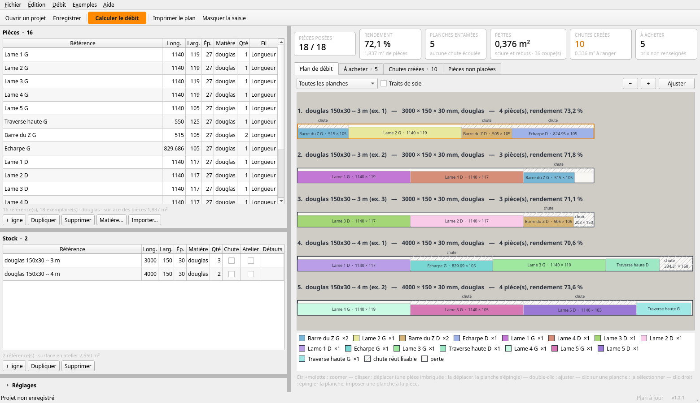
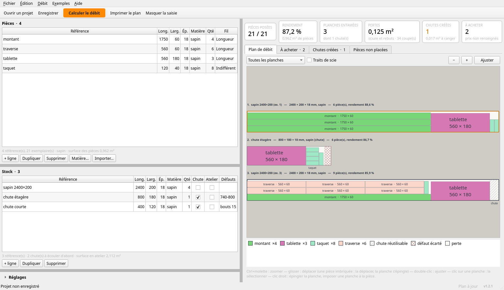
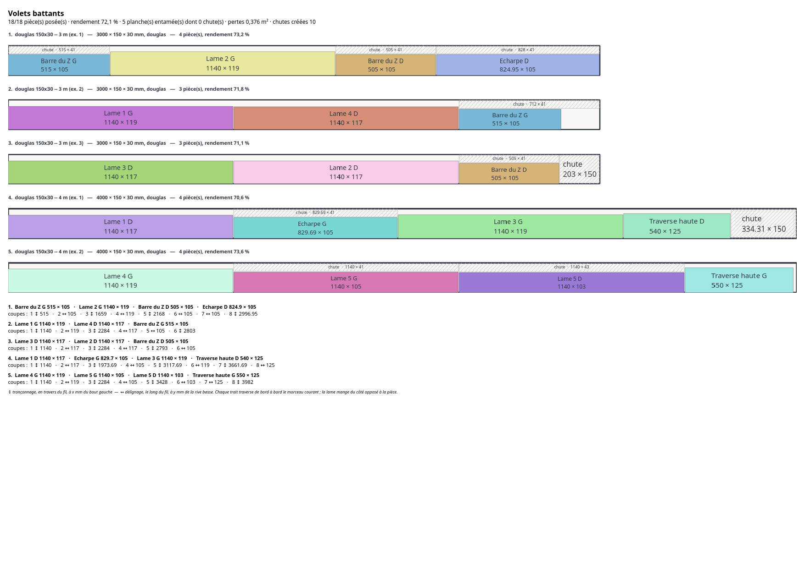
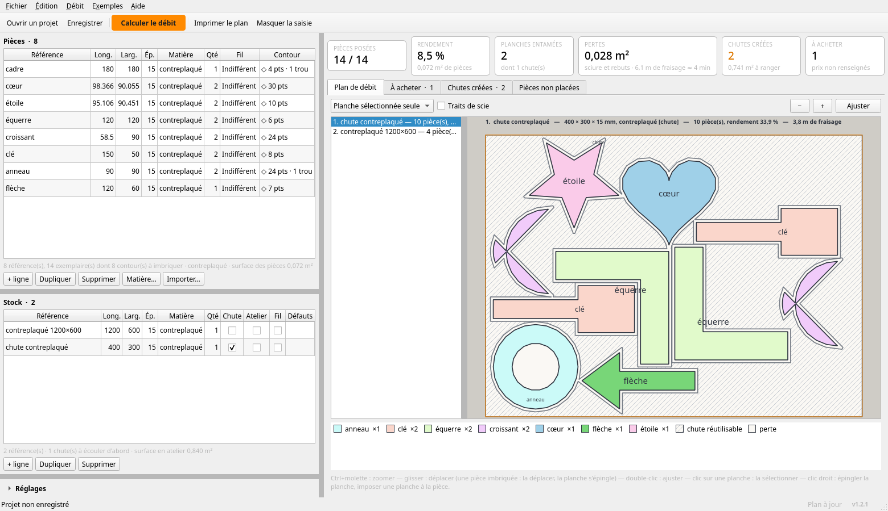

Cliquer n'importe où, ou Échap, pour fermer
Les optimiseurs de débit rangent des pièces dans des planches neuves. Un atelier, lui, a d'abord un tas de chutes — et c'est dedans qu'il faut tailler en premier. À la scie circulaire, ou à la fraise pour les formes qui ne sont pas des rectangles.
Toutes les planches empilées sous leur cartouche, les pièces colorées par référence, les chutes hachurées. Ce qui n'est ni l'un ni l'autre est la perte.


C'était la raison d'être du programme, et elle a mis un mois à exister : les chutes rangées dormaient dans le projet qui les avait produites. Les lignes cochées Atelier vivent maintenant dans un fichier commun, rechargé à chaque projet ouvert. « Ranger ces chutes au stock » y écrit aussitôt — une chute existe sur l'étagère que le projet soit enregistré ou non.
Une planche de sapin n'est pas son rectangle. La colonne
Défauts se tape en une ligne : bouts 30 ; rives 8 ;
1200-1280 ; 600,140,60,40 — trente millimètres à ôter à chaque
bout fendu, huit sur chaque rive avec flache, un nœud traversant de
1200 à 1280, une poche de résine. Le programme les retire par des
coupes ordinaires avant de poser quoi que ce soit, le trait de scie
tombant dans le bon bois ; ce qu'on déclare défaut est perdu en
entier.
Le plan calculé n'est jamais tout à fait celui qu'on veut. Clic droit sur une planche : elle est épinglée, reprise telle quelle au prochain calcul, le reste se range autour. Clic droit sur une pièce : la tailler dans une autre ligne de stock. Aucun des deux ne touche aux quantités — c'était l'ancienne façon, et elle mentait.
Entre deux plans qui placent tout dans le même bois neuf, l'un perd un peu moins de matière, l'autre demande moins de coupes. À la circulaire, des pièces de même largeur rangées en bandes se scient deux fois plus vite : un réglage dit lequel des deux compte. Le nombre de coupes est au bilan, et chaque trait porte son numéro sur le papier.
La couleur d'une pièce ne dépend que de son nom : la même garde sa teinte d'une séance à l'autre, sans table à tenir. Deux références d'un même débit ne partagent jamais une teinte — les collisions se résolvent en cherchant une couleur libre, parce que deux verts voisins sur un plan valent moins qu'un plan en noir et blanc.
Une feuille de débit existe presque toujours ailleurs avant d'arriver ici : Ctrl+V colle un bloc venu d'un tableur, Ctrl+D duplique une ligne — cinq lames identiques se saisissent une fois. Un nombre illisible rougit à la frappe, pas au moment du calcul. L'import et l'export CSV sont le contrat d'échange avec les autres projets de l'atelier.
Elle déligne le panneau en bandes pleine longueur, puis tronçonne chaque bande. Un plan guillotine libre, elle l'exécute mal.
La case coupe en bandes restreint le solveur à ces coupes en deux étapes : une recoupe de largeur dans la bande à la rigueur, jamais une recoupe de longueur. Ça coûte en général un peu de bois — et fait gagner le temps qu'on aurait passé à se battre avec la machine.
Un plan qu'on ne lit pas debout devant la machine n'est pas un plan.

Sous le dessin, la liste des coupes numérotées de chaque planche, celle qu'on suit à la scie. Le programme sort aussi le plan en image à résolution d'impression, une fiche d'atelier en texte, et des étiquettes à coller sur les pièces : référence, cotes, planche d'origine, exemplaire, et la couleur qu'elle a sur le plan — vingt-quatre par page A4, les planches d'étiquettes du commerce.
Les tailles de texte du plan étaient réglées en pixels. Sur une page à 1200 points par pouce, les noms des pièces sortaient hauts de 0,4 mm — illisibles. Le code ne le disait pas ; le PDF, si. Elles se grossissent maintenant à proportion de la résolution demandée.
Un projet dessiné dans FreeCAD porte déjà ses cotes dans un tableur. Les retaper à la main, c'est se donner l'occasion de se tromper.
Fichier → Importer des pièces (FreeCAD .FCStd) lit la feuille de
calcul dans le document, sans lancer FreeCAD. Il y faut une ligne
d'en-tête (Rep. ou Désignation, Longueur, Largeur, et à volonté Qté,
Épaisseur, Matière, Fil), une pièce par ligne dessous ; les titres de
section sont sautés. Les formules sont calculées — alias,
références d'une feuille à l'autre comme
Parametres.HautVantail, unités, round — parce
qu'une feuille de débit réelle n'est faite que de cela. Ce que
l'évaluateur ne sait pas, il le refuse en nommant la cellule :
un nombre faux dans un débit se paye en bois.
Un débit n'est pas un problème de surface. Deux solutions qui posent toutes les pièces ne se valent pas, et l'ordre dans lequel on les départage est une décision d'atelier, pas de mathématiques.
Entre deux plans, le programme préfère, dans cet ordre : moins de pièces non placées ; moins cher, quand les prix sont renseignés ; moins de bois neuf entamé — c'est là que le déstockage se joue ; moins de pertes, puis moins de coupes (ou l'inverse, si l'on privilégie le temps de scie) ; et enfin des chutes concentrées — une grande plutôt que trois moyennes de même surface, parce qu'un reste de 800 mm vaut mieux que deux de 400.
« Neuf » et « perte » comptent un volume, pas une surface. Une planche deux fois plus épaisse, c'est deux fois plus de bois pour la même surface de face — l'ignorer faisait gagner le brut le plus épais dès qu'il était un peu moins large qu'un brut plus mince pourtant suffisant. Relevé sur un cas réel : une pièce de 11,5 mm taillée dans du 65 alors qu'un 32 suffisait largement.
Le résultat est déterministe : mêmes entrées, même plan. Le solveur guillotine essaie quatre-vingts stratégies — quarante-huit réglées, les autres tirées au sort à graine fixe — puis travaille la meilleure par recherche locale : vider une planche, replacer ses pièces dans les trous des autres. C'est ainsi qu'une planche de trop disparaît. Deux calculs ne peuvent pas se contredire, en parallèle ou non.
Une équerre débitée dans son rectangle englobant gaspille son échancrure. À la fraise, deux équerres tête-bêche tiennent dans la place d'une.

Fichier → Importer des contours lit un SVG (Inkscape, FreeCAD…) : chaque tracé fermé devient une pièce, un tracé contenu dans un autre devient son trou. Dès qu'une matière compte un contour, tout ce lot est imbriqué au lieu d'être scié, avec les mêmes planches, les mêmes chutes et les mêmes défauts. Fichier → Exporter la découpe rend chaque planche à l'échelle 1 en SVG, en DXF pour la fraiseuse ou en projet LightBurn pour le laser.
Ce qui reste de la planche garde sa forme : le panneau moins les pièces élargies du passage de la fraise, morceau par morceau. Un morceau rectangulaire redevient un rectangle qu'une scie saura reprendre ; les autres sont des chutes biscornues, rangées au stock avec leur polygone et leurs trous. Au débit suivant, on imbrique dedans — dans le bois, pas dans sa boîte. Le cartouche de chaque planche imbriquée annonce sa longueur de fraisage, et le bilan le temps que cela demande à l'avance réglée.
Ces trois formats décrivent des contours : il faut encore une
chaîne CAM pour en tirer un parcours. Fichier → Exporter le
G-code saute l'étape et écrit le programme lui-même, un
.ngc par planche : décalé du rayon de la fraise
(vers l'extérieur pour le tour d'une pièce, vers l'intérieur pour
ses trous — sans quoi la pièce sort trop petite d'un diamètre
entier), en passes jusqu'à mordre le martyr, avec des
attaches pour que la pièce ne se libère pas sous la fraise,
des rampes au lieu de plongées droites, et les trous percés
avant le tour. LinuxCNC ou GRBL. Le fichier dit en tête, en
commentaires, si la fraise mord dans une pièce voisine ou sort de la
planche.
Les contrôles automatiques n'examinent pas le texte du G-code : ils le rejouent dans un simulateur qui tient l'état de la machine, et vérifient ce que la fraise fait — le décalage, le sens de rotation, l'ordre des contours, les profondeurs, les attaches, et qu'aucun déplacement rapide ne traverse le bois. Un parcours se regarde aussi : le tracer a montré du premier coup que le décalage en onglet dessinait des pointes qu'une fraise ronde ne peut pas atteindre.
Un plan ne se subit pas : sur une planche imbriquée, glisser une pièce à la souris la déplace. Le programme vérifie qu'elle reste dans le bois et à l'écart des autres, refait les chutes, et épingle la planche — sinon le calcul suivant déferait le geste.
Pour une pièce déjà posée A et une pièce à poser B, le no-fit polygon est la région des positions de B qui recouvrent A : la somme de Minkowski de A et de B retournée, élargie de l'écart de fraise. Le bord de la planche, recoupes et défauts compris, est un obstacle comme un autre. Les positions valides sont « la planche moins l'union des NFP », et les seules à essayer en sont les sommets — toutes en contact avec un voisin ou le bord. On garde celle qui serre le plus les pièces, puis la plus basse et la plus à gauche.
Le NFP de deux formes concaves se calcule par triangulation : la somme de deux triangles est l'enveloppe convexe de leurs neuf sommes de sommets, et l'union de ces enveloppes est le NFP — exact, sans l'algorithme d'orbite et ses cas dégénérés. Un polygone à trou se triangule sur sa seule matière, si bien que le NFP laisse libre, de lui-même, l'intérieur d'un trou où une pièce plus petite tient.
Le premier moteur posait les pièces par contacts sommet à sommet projetés au sol : correct, mais une approximation, et soixante pièces prenaient une demi-minute. Le NFP les fait en une seconde sur les cœurs de la machine — les stratégies se répartissent en processus, le résultat ne dépend pas de leur nombre.
Cinq décisions qui n'ont rien d'informatique et tout de la menuiserie. Elles sont dépliables : le détail n'est pas retiré, il est rangé.
Chaque trait traverse le morceau de bord à bord, comme à la scie circulaire ou sur une scie à format. C'est une contrainte forte : un imbriquement libre rangerait mieux, sur le papier.
Mais un plan qu'on ne peut pas exécuter ne vaut rien. Les coupes sortent numérotées dans un ordre réellement exécutable : à chaque trait, le morceau courant est traversé entier. On peut les afficher sur le plan, elles se lisent dans cet ordre-là.
Le trait de scie est retiré de la matière à chaque coupe, du côté opposé à la pièce. Il est réglable, et retenu d'une séance à l'autre : c'est une propriété de la scie, pas du projet.
Une planche convient à une pièce si elle est au moins aussi épaisse. Plus épaisse : toujours bon, on rabotera. Plus mince : rien à faire. Un même brut peut donc fournir des pièces de finitions différentes, chacune rabotée à sa cote après le débit en longueur et largeur.
La tolérance réglable n'absorbe que le bruit de mesure — 18,0 relevé au pied à coulisse contre 18,05 demandé. Elle ne sert pas à faire passer une pièce plus épaisse que le stock : ce serait transformer un réglage de confort en mensonge.
Un panneau de 422 mm de large n'entre dans aucune planche de 200. Coché composable, il se décompose en lames à coller côte à côte (ou à assembler tenon-rainure) — chacune devient une pièce ordinaire pour le solveur, qui n'a rien à savoir de plus. La largeur perdue à chaque collage est réglable.
Une pièce qui logerait déjà telle quelle n'est jamais décomposée : moins de joints, plus solide.
La décomposition taillait des lames larges d'exactement la planche. Dès qu'on demandait une surcote de recoupe, elles ne rentraient plus — et la pièce ressortait « trop grande », précisément ce qu'être composable devait éviter. Mesuré : 397 mm de large sur un brut de 200, deux lames sans surcote, zéro pièce posée avec 5 mm. Ce qui borne une lame, c'est la largeur du brut moins la surcote.
Une ligne cochée Catalogue n'est pas un stock : c'est une section disponible chez le fournisseur. Sa quantité ne borne plus rien, le programme en prend autant que le débit demande, et rend ensuite la liste de ce qu'il faut acheter — par profil, avec le coût si les prix sont renseignés.
Entre deux profils compatibles, c'est le prix d'une planche qui départage — pas le prix au mètre, celui du morceau tel qu'on l'achète. Sans prix, c'est le moins de rabotage perdu qui décide.
Toute la géométrie et le solveur guillotine vivent dans un module
sans aucune dépendance, éprouvé sans écran ; l'imbrication CNC
à côté, sur shapely, chargée seulement quand un contour
est demandé. Deux interfaces se construisent par-dessus et n'y
touchent jamais — Qt sur le bureau, HTML dans le navigateur : elles
assemblent les entrées, appellent le solveur, affichent ce qui
revient. C'est cette règle qui a permis la version web sans changer
une ligne du cœur.
Les contrôles vérifient des propriétés sur des cas tirés au sort à graine fixe : aucune pièce hors de sa planche ni sur un défaut, aucun recouvrement, le trait de scie respecté entre toute paire de rectangles, l'écart de fraise entre toute paire de contours, la conservation — planche = pièces + chutes + pertes, au millimètre carré —, et pour le NFP, sur mille cinq cents positions tirées au hasard, « dans le NFP » et « recouvre » ne diffèrent jamais.
Les 334 contrôles tournent sans écran, et détournent les réglages Qt vers un dossier jetable : un contrôle ne touche jamais la configuration de l'atelier.
Sous LGPL-2.1, sur github.com/atelierduverdier/chutier — le cœur sans dépendance, l'imbrication, l'interface PySide6, la page web, et les 334 contrôles.